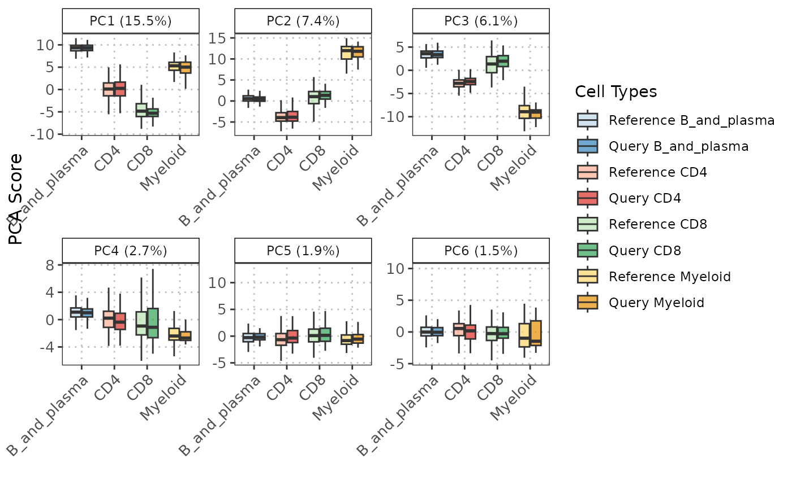

This function generates a ggplot2 boxplot visualization of principal components (PCs) for different
cell types across two datasets (query and reference).
boxplotPCA(
query_data,
reference_data,
n_components = 10,
cell_types = NULL,
query_cell_type_col = NULL,
ref_cell_type_col = NULL,
pc_subset = c(1:5)
)A SingleCellExperiment object containing numeric expression matrix for the query cells.
A SingleCellExperiment object containing numeric expression matrix for the reference cells.
An integer specifying the number of principal components to use for projection. Defaults to 10. Must be less than or equal to the number of components available in the reference PCA.
A character vector specifying the cell types to include in the plot. If NULL, all cell types are included.
character. The column name in the colData of query_data
that identifies the cell types.
character. The column name in the colData of reference_data
that identifies the cell types.
A numeric vector specifying which principal components to include in the plot. Default is PC1 to PC5.
A ggplot object representing the boxplots of specified principal components for the given cell types and datasets.
The function boxplotPCA is designed to provide a visualization of principal component analysis (PCA) results. It projects
the query dataset onto the principal components obtained from the reference dataset. The results are then visualized
as boxplots, grouped by cell types and datasets (query and reference). This allows for a comparative analysis of the
distributions of the principal components across different cell types and datasets. The function internally calls projectPCA
to perform the PCA projection. It then reshapes the output data into a long format suitable for ggplot2 plotting.
The color scheme is automatically determined using the RColorBrewer package, ensuring a visually distinct and appealing plot.
# Load required libraries
library(scRNAseq)
#> Loading required package: SingleCellExperiment
#> Loading required package: SummarizedExperiment
#> Loading required package: MatrixGenerics
#> Loading required package: matrixStats
#>
#> Attaching package: 'MatrixGenerics'
#> The following objects are masked from 'package:matrixStats':
#>
#> colAlls, colAnyNAs, colAnys, colAvgsPerRowSet, colCollapse,
#> colCounts, colCummaxs, colCummins, colCumprods, colCumsums,
#> colDiffs, colIQRDiffs, colIQRs, colLogSumExps, colMadDiffs,
#> colMads, colMaxs, colMeans2, colMedians, colMins, colOrderStats,
#> colProds, colQuantiles, colRanges, colRanks, colSdDiffs, colSds,
#> colSums2, colTabulates, colVarDiffs, colVars, colWeightedMads,
#> colWeightedMeans, colWeightedMedians, colWeightedSds,
#> colWeightedVars, rowAlls, rowAnyNAs, rowAnys, rowAvgsPerColSet,
#> rowCollapse, rowCounts, rowCummaxs, rowCummins, rowCumprods,
#> rowCumsums, rowDiffs, rowIQRDiffs, rowIQRs, rowLogSumExps,
#> rowMadDiffs, rowMads, rowMaxs, rowMeans2, rowMedians, rowMins,
#> rowOrderStats, rowProds, rowQuantiles, rowRanges, rowRanks,
#> rowSdDiffs, rowSds, rowSums2, rowTabulates, rowVarDiffs, rowVars,
#> rowWeightedMads, rowWeightedMeans, rowWeightedMedians,
#> rowWeightedSds, rowWeightedVars
#> Loading required package: GenomicRanges
#> Loading required package: stats4
#> Loading required package: BiocGenerics
#>
#> Attaching package: 'BiocGenerics'
#> The following objects are masked from 'package:stats':
#>
#> IQR, mad, sd, var, xtabs
#> The following objects are masked from 'package:base':
#>
#> Filter, Find, Map, Position, Reduce, anyDuplicated, aperm, append,
#> as.data.frame, basename, cbind, colnames, dirname, do.call,
#> duplicated, eval, evalq, get, grep, grepl, intersect, is.unsorted,
#> lapply, mapply, match, mget, order, paste, pmax, pmax.int, pmin,
#> pmin.int, rank, rbind, rownames, sapply, setdiff, table, tapply,
#> union, unique, unsplit, which.max, which.min
#> Loading required package: S4Vectors
#>
#> Attaching package: 'S4Vectors'
#> The following object is masked from 'package:utils':
#>
#> findMatches
#> The following objects are masked from 'package:base':
#>
#> I, expand.grid, unname
#> Loading required package: IRanges
#> Loading required package: GenomeInfoDb
#> Loading required package: Biobase
#> Welcome to Bioconductor
#>
#> Vignettes contain introductory material; view with
#> 'browseVignettes()'. To cite Bioconductor, see
#> 'citation("Biobase")', and for packages 'citation("pkgname")'.
#>
#> Attaching package: 'Biobase'
#> The following object is masked from 'package:MatrixGenerics':
#>
#> rowMedians
#> The following objects are masked from 'package:matrixStats':
#>
#> anyMissing, rowMedians
library(scuttle)
library(SingleR)
library(scran)
library(scater)
#> Loading required package: ggplot2
# Load data (replace with your data loading)
sce <- HeOrganAtlasData(tissue = c("Marrow"), ensembl = FALSE)
# Divide the data into reference and query datasets
set.seed(100)
indices <- sample(ncol(assay(sce)), size = floor(0.7 * ncol(assay(sce))), replace = FALSE)
ref_data <- sce[, indices]
query_data <- sce[, -indices]
# log transform datasets
ref_data <- scuttle::logNormCounts(ref_data)
query_data <- scuttle::logNormCounts(query_data)
# Get cell type scores using SingleR (or any other cell type annotation method)
scores <- SingleR::SingleR(query_data, ref_data, labels = ref_data$reclustered.broad)
# Add labels to query object
colData(query_data)$labels <- scores$labels
# Selecting highly variable genes (can be customized by the user)
ref_var <- scran::getTopHVGs(ref_data, n = 2000)
query_var <- scran::getTopHVGs(query_data, n = 2000)
# Intersect the gene symbols to obtain common genes
common_genes <- intersect(ref_var, query_var)
ref_data_subset <- ref_data[common_genes, ]
query_data_subset <- query_data[common_genes, ]
# Run PCA on the reference data (assumed to be prepared)
ref_data_subset <- runPCA(ref_data_subset)
pc_plot <- boxplotPCA(query_data_subset, ref_data_subset,
n_components = 10,
cell_types = c("CD4", "CD8", "B_and_plasma", "Myeloid"),
query_cell_type_col = "labels",
ref_cell_type_col = "reclustered.broad",
pc_subset = c(1:5))
pc_plot
